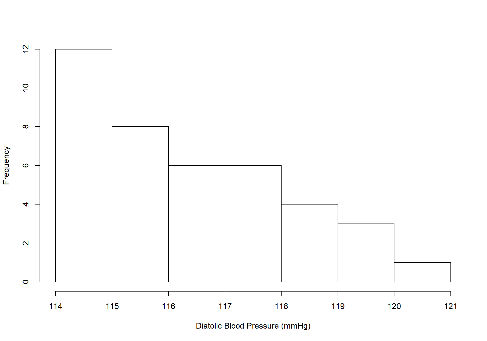
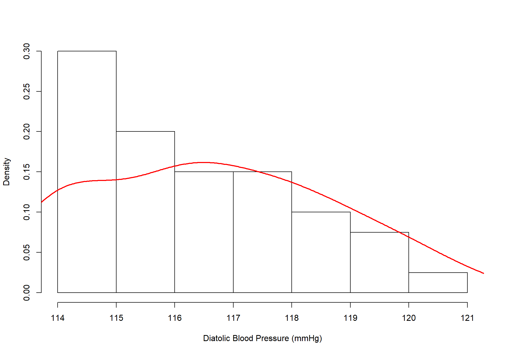
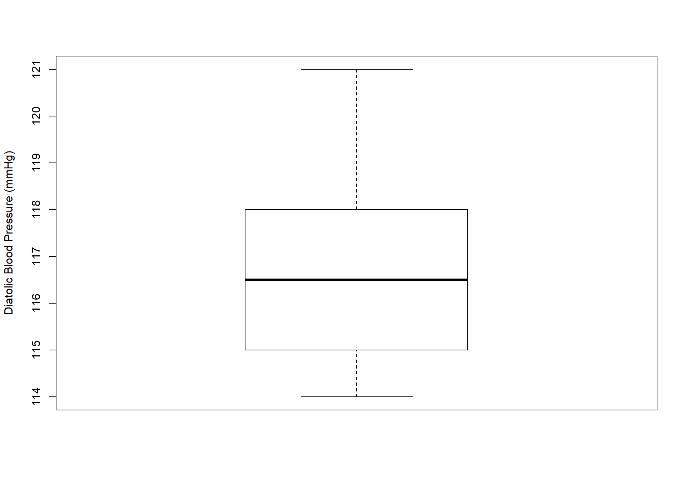
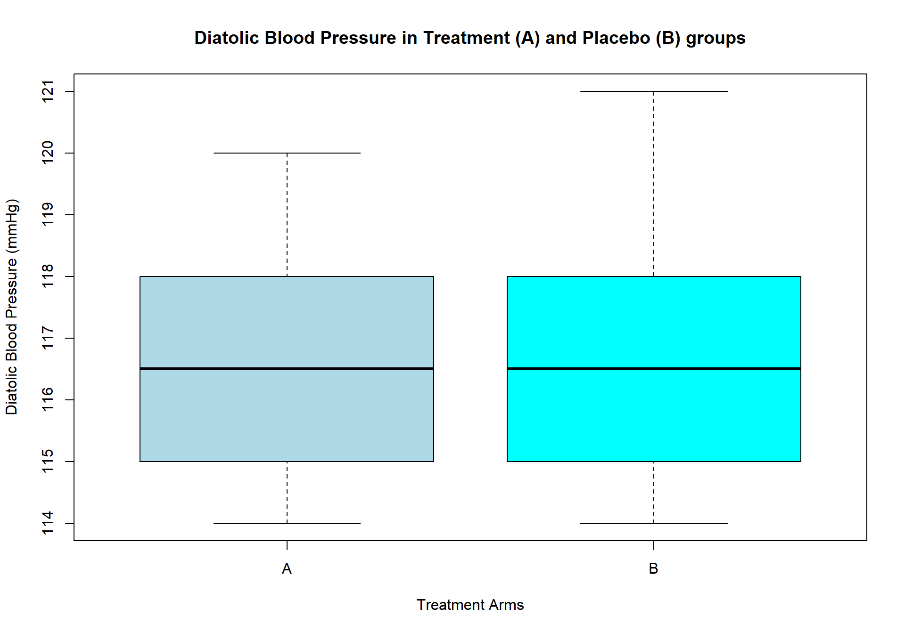

The Basics of R Programming - D3
Online Workshop By R-Club UDs & PytoCaR
08 Feb 2025
3 Exploratory Data Analysis
Below are a couple of functions one can use for data exploration. Note that because R is a functional programming language, the output of each function may vary based on the nature of the obejct the function is applied on.
| Function | Output |
|---|---|
head() |
show the first 6 (unless specified otherwise) rows of data. |
tail() |
Get the last 6 (unless specified otherwise) rows from our data. |
dim() |
Get the dimension of a dataset (number of rows and columns) |
nrow() |
Get the number of rows of the dataset |
ncol() |
Get the number of columns of the dataset |
names() |
Get the names of the variables of a dataset |
str() |
Compactly Display the Structure of an Arbitrary R Object |
summary() |
Summarises the data |
glimpse() |
{dplyr} Get a glimpse of your data |
skim() |
{skimr} Skim a data frame, getting useful summary statistics |
Application
Subject TRT DBP1 DBP2 DBP3 DBP4 DBP5 Age Sex
1 1 A 114 115 113 109 105 43 F
2 2 A 116 113 112 103 101 51 M
3 3 A 119 115 113 104 98 48 F
4 4 A 115 113 112 109 101 42 F
5 5 A 116 112 107 104 105 49 M
6 6 A 117 112 113 104 102 47 M# A tibble: 6 × 3
age quarter gastr_status
<dbl> <chr> <chr>
1 17 Bomaka Positive
2 26 Mayor Street Positive
3 24 Sandpit Negative
4 22 Molyko Negative
5 21 Sandpit Positive
6 18 Bomaka Positive [1] 1025 14[1] 40[1] 3tibble [132 × 3] (S3: tbl_df/tbl/data.frame)
$ age : num [1:132] 20 30 25 17 24 21 16 20 30 24 ...
$ quarter : chr [1:132] "Sandpit" "Molyko" "Mayor Street" "Mayor Street" ...
$ gastr_status: chr [1:132] "Negative" "Negative" "Positive" "Positive" ... Subject TRT DBP1 DBP2 DBP3
Min. : 1.00 A:20 Min. :114.0 Min. :111.0 Min. :100.0
1st Qu.:10.75 B:20 1st Qu.:115.0 1st Qu.:113.0 1st Qu.:112.0
Median :20.50 Median :116.5 Median :115.0 Median :113.0
Mean :20.50 Mean :116.7 Mean :114.3 Mean :112.4
3rd Qu.:30.25 3rd Qu.:118.0 3rd Qu.:115.0 3rd Qu.:113.0
Max. :40.00 Max. :121.0 Max. :119.0 Max. :118.0
DBP4 DBP5 Age Sex
Min. :102.0 Min. : 97.0 Min. :38.00 F:18
1st Qu.:106.8 1st Qu.:101.8 1st Qu.:42.00 M:22
Median :109.0 Median :106.5 Median :48.00
Mean :109.3 Mean :106.7 Mean :47.83
3rd Qu.:113.2 3rd Qu.:112.0 3rd Qu.:51.25
Max. :117.0 Max. :115.0 Max. :63.00 Rows: 132
Columns: 3
$ age <dbl> 20, 30, 25, 17, 24, 21, 16, 20, 30, 24, 27, 26, 19, 21, 1…
$ quarter <chr> "Sandpit", "Molyko", "Mayor Street", "Mayor Street", "Mol…
$ gastr_status <chr> "Negative", "Negative", "Positive", "Positive", "Negative…| Name | dbp |
| Number of rows | 40 |
| Number of columns | 9 |
| _______________________ | |
| Column type frequency: | |
| factor | 2 |
| numeric | 7 |
| ________________________ | |
| Group variables | None |
Variable type: factor
| skim_variable | n_missing | complete_rate | ordered | n_unique | top_counts |
|---|---|---|---|---|---|
| TRT | 0 | 1 | FALSE | 2 | A: 20, B: 20 |
| Sex | 0 | 1 | FALSE | 2 | M: 22, F: 18 |
Variable type: numeric
| skim_variable | n_missing | complete_rate | mean | sd | p0 | p25 | p50 | p75 | p100 | hist |
|---|---|---|---|---|---|---|---|---|---|---|
| Subject | 0 | 1 | 20.50 | 11.69 | 1 | 10.75 | 20.5 | 30.25 | 40 | ▇▇▇▇▇ |
| DBP1 | 0 | 1 | 116.65 | 2.03 | 114 | 115.00 | 116.5 | 118.00 | 121 | ▇▅▇▂▂ |
| DBP2 | 0 | 1 | 114.35 | 1.83 | 111 | 113.00 | 115.0 | 115.00 | 119 | ▃▅▇▁▂ |
| DBP3 | 0 | 1 | 112.38 | 3.05 | 100 | 112.00 | 113.0 | 113.00 | 118 | ▁▁▂▇▂ |
| DBP4 | 0 | 1 | 109.35 | 4.02 | 102 | 106.75 | 109.0 | 113.25 | 117 | ▅▂▇▅▁ |
| DBP5 | 0 | 1 | 106.65 | 5.82 | 97 | 101.75 | 106.5 | 112.00 | 115 | ▃▇▁▆▇ |
| Age | 0 | 1 | 47.83 | 6.65 | 38 | 42.00 | 48.0 | 51.25 | 63 | ▇▆▆▃▂ |
3.1 Graphical Approach
3.1.1 Histograms
# 1st graph
hist(dbp$DBP1, xlab = "Diatolic Blood Pressure (mmHg)", col = "white",
main = NA)
# 2nd graph
hist(dbp$DBP1, xlab = "Diatolic Blood Pressure (mmHg)", col = "white",
main = NA, probability = T)
lines(density(dbp$DBP1), lwd = 2, col = "red") # lwd means line width

3.1.2 Boxplots

# 1st graph
boxplot(dbp$DBP1, ylab = "Diatolic Blood Pressure (mmHg)", col = "white")
# 2nd graph
boxplot(dbp$DBP1~dbp$TRT, main = "Diatolic Blood Pressure in Treatment (A) and Placebo (B) groups",
xlab = "Treatment Arms", ylab = "Diatolic Blood Pressure (mmHg)",
col = c("lightblue", "cyan"))

3.2 Bonus
# The argument `na.rm=T` is there to prevent unexpected outputs due to missing values in the data.
mean(dbp$DBP1, na.rm = T) # Arithmetic mean
MeanCI(dbp$DBP1, na.rm = T) # CI of the mean, under {DescTools}
Gmean(dbp$DBP1, na.rm = T) # Geometric mean, under {DescTools}
Median(dbp$DBP1, na.rm = T) # Median, under {DescTools}
MedianCI(dbp$DBP1, na.rm = T) # CI of the median, under {DescTools}
sd(dbp$DBP1, na.rm = T) # Arithmetic standard deviation
Gsd(dbp$DBP1, na.rm = T) # Geometric sd, under {DescTools}
var(dbp$DBP1, na.rm = T) # Variance
range(dbp$DBP1, na.rm = T)
min(dbp$DBP1, na.rm = T)
max(dbp$DBP1, na.rm = T)
quantile(dbp$DBP1, na.rm = T)
quantile(dbp$DBP1, na.rm = T, .2) # 20% quantile.
IQR(dbp$DBP1, na.rm = T) # Inter-quartile range (3rd Qrt - 1st Qurt)